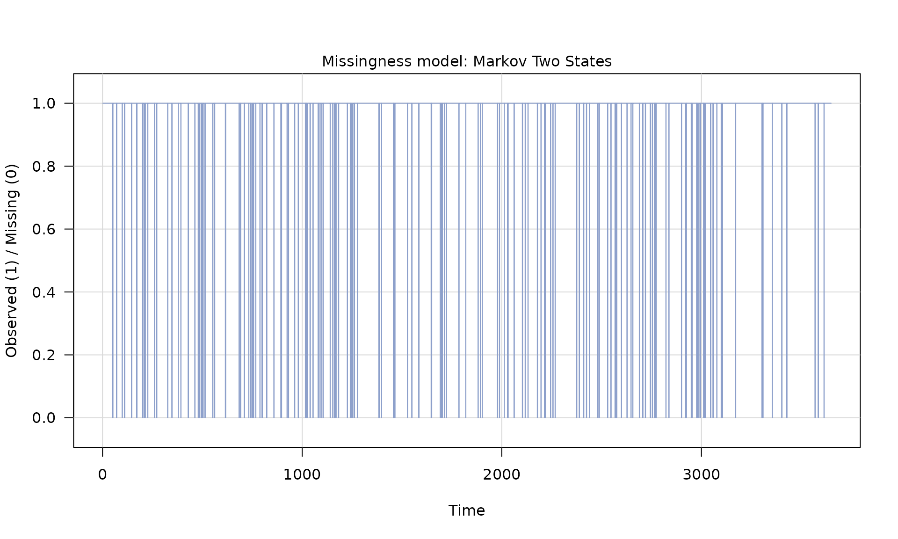
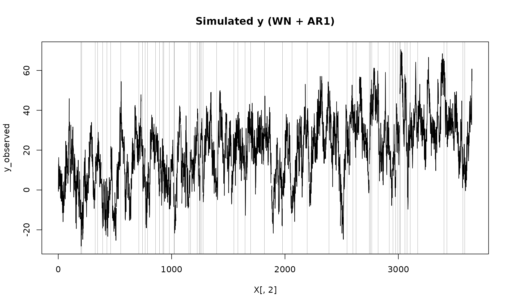
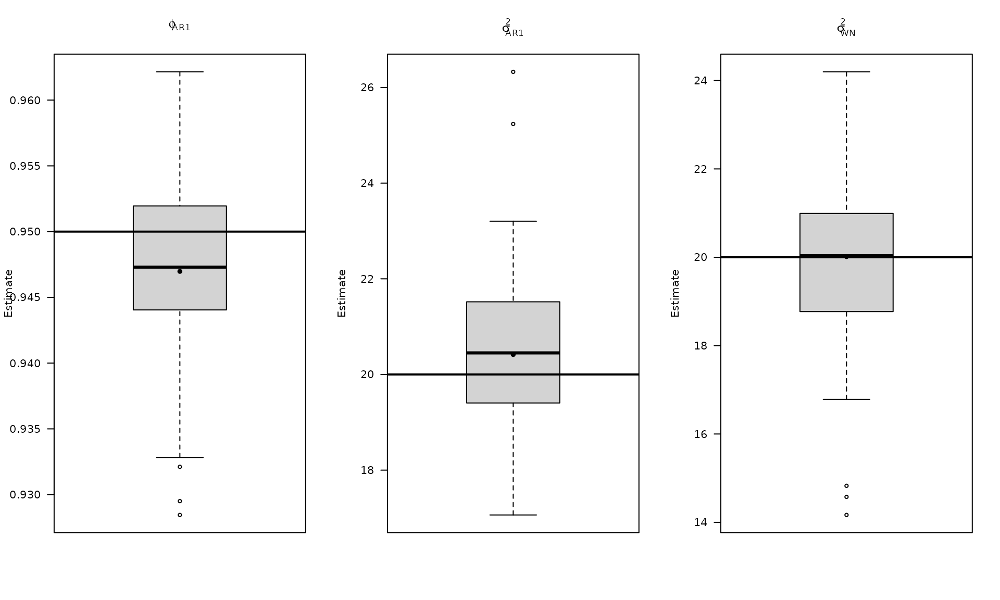
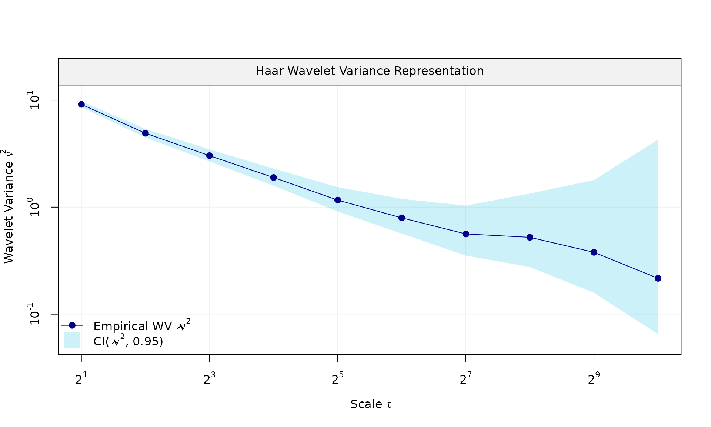
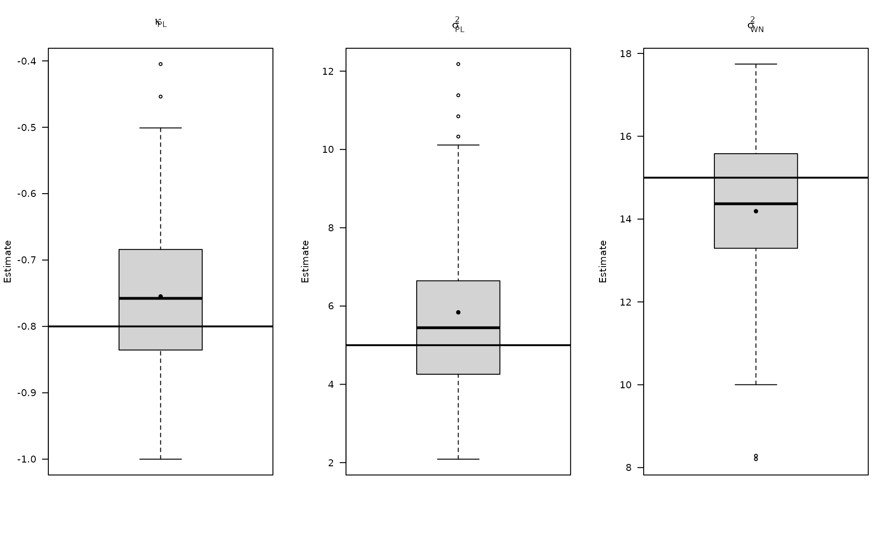
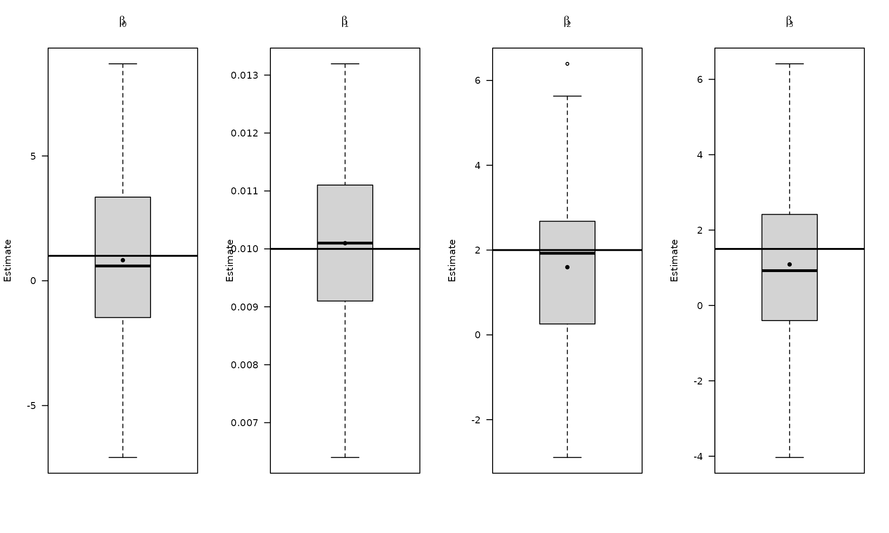
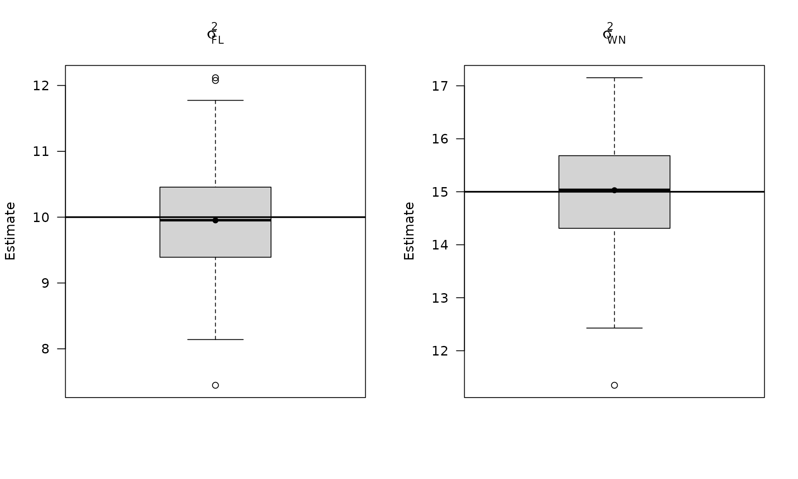

GMWMX: Estimate linear models with dependent errors and missing observations
Source:vignettes/gmwmx2_new_w_missing.Rmd
gmwmx2_new_w_missing.RmdThis vignette shows how to perform inference for a linear regression
model with dependent errors and missing observations. We consider the
model
where the error process
follows a composite stochastic model. Missingness is modeled by a binary
process
with
indicating observation, and
a missing observation. The observed series is
which we implement by setting
to NA when
.
Overall, these examples illustrate how gmwmx2_new()
supports inference for linear regression models with dependent errors
when observations are missing, and how the results compare to a naive
OLS fit that ignores dependence.
##
## Attaching package: 'dplyr'## The following objects are masked from 'package:stats':
##
## filter, lag## The following objects are masked from 'package:base':
##
## intersect, setdiff, setequal, union
boxplot_mean_dot <- function(x, ...) {
boxplot(x, ...)
x_mat <- as.matrix(x)
mean_vals <- colMeans(x_mat, na.rm = TRUE)
points(seq_along(mean_vals), mean_vals, pch = 16, col = "black")
}We load the packages used for simulation, wavelet variance
diagnostics, and summary plots. The helper
boxplot_mean_dot() overlays Monte Carlo means on top of
each boxplot for easier comparison.
We first construct a design matrix with an intercept, linear trend, and annual seasonal components. This deterministic signal will be used across examples.
n = 10*365
X = matrix(NA, nrow = n, ncol = 4)
# intercept
X[, 1] = 1
# trend
X[, 2] = 1:n
# annual sinusoid
omega_1 <- (1 / 365.25) * 2 * pi
X[, 3] <- sin((1:n) * omega_1)
X[, 4] <- cos((1:n) * omega_1)
beta = c(1, 0.01, 2, 1.5)
# visualize the deterministic signal
plot(x = X[, 2], y = X %*% beta, type = "l",
main = "Signal", xlab = "Time", ylab = "Signal")Next we simulate dependent errors, add them to the signal, and then
introduce missing observations using a two‑state Markov model. This is
the key difference from vignettes/gmwmx2_new.Rmd, which
uses fully observed data.
# Example 1: White noise + AR(1)
phi_ar1 = 0.95
sigma2_ar1 = 20
sigma2_wn = 20
eps = generate(ar1(phi = phi_ar1, sigma2 = sigma2_ar1) + wn(sigma2_wn), n = n, seed = 123)$series
plot(wv::wvar(eps))
y = X %*% beta + eps
# generate missingness
mod_missing = markov_two_states(p1 = 0.05, p2 = .95)
Z = generate(mod_missing, n = n, seed = 123)
plot(Z)
Z_process = Z$series
y_observed = ifelse(Z_process == 1, y, NA)
plot(X[, 2], y_observed, type = "l", main = "Simulated y (WN + AR1)")
# add grey boxes at missing indices (x ± eps) to visualize NA locations;
# unlike `vignettes/gmwmx2_new.Rmd`, which plots the fully observed series
na_idx <- which(is.na(y_observed))
# choose epsilon relative to x spacing
dx <- median(diff(X[, 2]), na.rm = TRUE)
eps <- 0.45 * dx
ylim <- par("usr")[3:4]
for (i in na_idx) {
rect(
xleft = X[i, 2] - eps,
xright = X[i, 2] + eps,
ybottom = ylim[1],
ytop = ylim[2],
col = adjustcolor("grey20", alpha.f = 0.5),
border = NA
)
}
lines(X[, 2], y_observed)
We then fit the dependent‑error regression using
gmwmx2_new(), which accounts for the stochastic error model
and the missing observations.
#
# Fit model (WN + AR1)
fit = gmwmx2_new(X = X, y = y_observed, model = wn() + ar1() )
print(fit)## GMWMX fit
## Estimate Std.Error
## beta1 4.482032 3.141609
## beta2 0.008282 0.001489
## beta3 1.317747 2.092473
## beta4 -0.972378 2.074849
##
## Missingness model
## Proportion missing : 0.0455
## p1 : 0.0451
## p2 : 0.9458
## p* : 0.9545
##
## Stochastic model
## Sum of 2 processes
## [1] White Noise
## Estimated parameters : sigma2 = 21.51
## [2] AR(1)
## Estimated parameters : phi = 0.9562, sigma2 = 17.41
##
## Runtime (seconds)
## Total : 1.3251
B = 100
mat_res = matrix(NA, nrow=B, ncol=19)
for(b in seq(B)){
eps = generate(ar1(phi=0.95, sigma2=20) + wn(20), n=n, seed = (123 + b))$series
y = X %*% beta + eps
Z = generate(mod_missing, n = n, seed = 123 + b)$series
y_observed = ifelse(Z == 1, y, NA)
fit = gmwmx2_new(X = X, y = y_observed, model = wn() + ar1() )
# mispecified model assuming white noise as the stochastic model and only on observed data
fit2 = lm(y_observed~X[,2] + X[,3] + X[,4])
mat_res[b, ] = c(fit$beta_hat, fit$std_beta_hat,
summary(fit2)$coefficients[,1],
summary(fit2)$coefficients[,2],
fit$theta_domain$`AR(1)_2`,
fit$theta_domain$`White Noise_1`)
# cat("Iteration ", b, " completed.\n")
}We now assess inference quality under missingness by repeating the
simulation, fitting the correct dependent‑error model with
gmwmx2_new(), and comparing against a misspecified OLS fit
that treats the errors as i.i.d. and uses only observed data.
# compute empirical coverage
mat_res_df = as.data.frame(mat_res)
colnames(mat_res_df) = c("gmwmx_beta0_hat", "gmwmx_beta1_hat",
"gmwmx_beta2_hat", "gmwmx_beta3_hat",
"gmwmx_std_beta0_hat", "gmwmx_std_beta1_hat",
"gmwmx_std_beta2_hat", "gmwmx_std_beta3_hat",
"lm_beta0_hat", "lm_beta1_hat", "lm_beta2_hat", "lm_beta3_hat",
"lm_std_beta0_hat", "lm_std_beta1_hat", "lm_std_beta2_hat", "lm_std_beta3_hat",
"phi_ar1","sigma_2_ar1" ,"sigma_2_wn")
# Plot empirical distributions (beta and stochastic parameters)
par(mfrow = c(1, 4))
boxplot_mean_dot(mat_res_df[, c("gmwmx_beta0_hat")],las=1,
names = c("beta0"),
main = expression(beta[0]), ylab = "Estimate")
abline(h = beta[1], col = "black", lwd = 2)
boxplot_mean_dot(mat_res_df[, c("gmwmx_beta1_hat")],las=1,
names = c("beta1"),
main = expression(beta[1]), ylab = "Estimate")
abline(h = beta[2], col = "black", lwd = 2)
boxplot_mean_dot(mat_res_df[, c("gmwmx_beta2_hat")],las=1,
names = c("beta2"),
main = expression(beta[2]), ylab = "Estimate")
abline(h = beta[3], col = "black", lwd = 2)
boxplot_mean_dot(mat_res_df[, c("gmwmx_beta3_hat")],las=1,
names = c("beta3"),
main = expression(beta[3]), ylab = "Estimate")
abline(h = beta[4], col = "black", lwd = 2)
par(mfrow = c(1, 3))
boxplot_mean_dot(mat_res_df$phi_ar1,las=1,
names = c("phi_ar1"),
main = expression(phi["AR1"]), ylab = "Estimate")
abline(h = phi_ar1, col = "black", lwd = 2)
boxplot_mean_dot(mat_res_df$sigma_2_ar1,las=1,
names = c("phi_ar1"),
main = expression(sigma["AR1"]^2), ylab = "Estimate")
abline(h = sigma2_ar1, col = "black", lwd = 2)
boxplot_mean_dot(mat_res_df$sigma_2_wn,las=1,
names = c("phi_ar1"),
main = expression(sigma["WN"]^2), ylab = "Estimate")
abline(h = sigma2_wn, col = "black", lwd = 2)
The boxplots summarize the empirical distribution of the regression estimates and stochastic parameters across Monte Carlo replications, with the true values shown as horizontal lines.
Coverage is computed using normal approximations for the coefficient
intervals. We report the empirical fraction of times the true
entries fall inside the estimated intervals for both
gmwmx2_new() and OLS.
# Compute empirical coverage of confidence intervals for beta
zval = qnorm(0.975)
mat_res_df$upper_ci_gmwmx_beta0 = mat_res_df$gmwmx_beta0_hat + zval * mat_res_df$gmwmx_std_beta0_hat
mat_res_df$lower_ci_gmwmx_beta0 = mat_res_df$gmwmx_beta0_hat - zval * mat_res_df$gmwmx_std_beta0_hat
mat_res_df$upper_ci_gmwmx_beta1 = mat_res_df$gmwmx_beta1_hat + zval * mat_res_df$gmwmx_std_beta1_hat
mat_res_df$lower_ci_gmwmx_beta1 = mat_res_df$gmwmx_beta1_hat - zval * mat_res_df$gmwmx_std_beta1_hat
# empirical coverage of gmwmx beta
dplyr::between(rep(beta[1], B), mat_res_df$lower_ci_gmwmx_beta0, mat_res_df$upper_ci_gmwmx_beta0) %>% mean()## [1] 0.94
dplyr::between(rep(beta[2], B), mat_res_df$lower_ci_gmwmx_beta1, mat_res_df$upper_ci_gmwmx_beta1) %>% mean()## [1] 0.91
# do the same for lm beta
mat_res_df$upper_ci_lm_beta0 = mat_res_df$lm_beta0_hat + zval * mat_res_df$lm_std_beta0_hat
mat_res_df$lower_ci_lm_beta0 = mat_res_df$lm_beta0_hat - zval * mat_res_df$lm_std_beta0_hat
mat_res_df$upper_ci_lm_beta1 = mat_res_df$lm_beta1_hat + zval * mat_res_df$lm_std_beta1_hat
mat_res_df$lower_ci_lm_beta1 = mat_res_df$lm_beta1_hat - zval * mat_res_df$lm_std_beta1_hat
dplyr::between(rep(beta[1], B), mat_res_df$lower_ci_lm_beta0, mat_res_df$upper_ci_lm_beta0) %>% mean()## [1] 0.21
dplyr::between(rep(beta[2], B), mat_res_df$lower_ci_lm_beta1, mat_res_df$upper_ci_lm_beta1) %>% mean()## [1] 0.25We now repeat the workflow for a long‑memory error model (white noise
+ stationary power‑law). The steps mirror the AR(1) case: simulate with
missingness, fit gmwmx2_new(), and compare to a
misspecified OLS fit.
The parameter controls the long‑memory behavior of the power‑law component, while the variance terms split energy between white noise and the power‑law process.
# Example 2: White noise + stationary power-law
kappa_pl <- -0.8
sigma2_wn <- 15
sigma2_pl <- 5
eps_pl = generate(wn(sigma2_wn) + pl(kappa = kappa_pl, sigma2 = sigma2_pl),
n = n, seed = 1234)
plot(eps_pl$series, type = "l")


Z_process = Z$series
y_observed = ifelse(Z_process == 1, y_pl, NA)
fit_pl = gmwmx2_new(X = X, y = y_observed, model = wn() + pl())
fit_pl## GMWMX fit
## Estimate Std.Error
## beta1 0.61993 0.9267089
## beta2 0.01073 0.0003565
## beta3 2.51989 0.2522263
## beta4 1.55462 0.2480877
##
## Missingness model
## Proportion missing : 0.0485
## p1 : 0.0475
## p2 : 0.9322
## p* : 0.9515
##
## Stochastic model
## Sum of 2 processes
## [1] White Noise
## Estimated parameters : sigma2 = 12.07
## [2] Stationary PowerLaw
## Estimated parameters : kappa = -0.6179, sigma2 = 8.114
##
## Runtime (seconds)
## Total : 0.4928As before, we keep the same missingness mechanism so that differences are driven by the error model rather than by the observation pattern.
Monte Carlo replication for the power‑law case.
B_pl = 100
mat_res_pl = matrix(NA, nrow = B_pl, ncol = 19)
for(b in seq(B_pl)){
eps = generate(wn(sigma2_wn) + pl(kappa = kappa_pl, sigma2 = sigma2_pl),
n = n, seed = (123 + b))$series
y = X %*% beta + eps
Z = generate(mod_missing, n = n, seed = (123 + b))
Z_process = Z$series
y_observed = ifelse(Z_process == 1, y, NA)
fit = gmwmx2_new(X = X, y = y_observed, model = wn() + pl())
fit2 = lm(y_observed~X[,2] + X[,3] + X[,4])
mat_res_pl[b, ] = c(fit$beta_hat, fit$std_beta_hat,
summary(fit2)$coefficients[,1],
summary(fit2)$coefficients[,2],
fit$theta_domain$`Stationary PowerLaw_2`,
fit$theta_domain$`White Noise_1`)
# cat("Iteration ", b, " \n")
}Aggregate the Monte Carlo results and visualize regression estimates.
The next plots focus on the distribution of estimates under the power‑law error model.
mat_res_pl_df = as.data.frame(mat_res_pl)
colnames(mat_res_pl_df) = c("gmwmx_beta0_hat", "gmwmx_beta1_hat",
"gmwmx_beta2_hat", "gmwmx_beta3_hat",
"gmwmx_std_beta0_hat", "gmwmx_std_beta1_hat",
"gmwmx_std_beta2_hat", "gmwmx_std_beta3_hat",
"lm_beta0_hat", "lm_beta1_hat", "lm_beta2_hat", "lm_beta3_hat",
"lm_std_beta0_hat", "lm_std_beta1_hat",
"lm_std_beta2_hat", "lm_std_beta3_hat",
"kappa_pl","sigma2_pl" ,"sigma2_wn")
# Plot empirical distributions (beta and stochastic parameters)
par(mfrow = c(1, 4))
boxplot_mean_dot(mat_res_df[, c("gmwmx_beta0_hat")],las=1,
names = c("beta0"),
main = expression(beta[0]), ylab = "Estimate")
abline(h = beta[1], col = "black", lwd = 2)
boxplot_mean_dot(mat_res_df[, c("gmwmx_beta1_hat")],las=1,
names = c("beta1"),
main = expression(beta[1]), ylab = "Estimate")
abline(h = beta[2], col = "black", lwd = 2)
boxplot_mean_dot(mat_res_df[, c("gmwmx_beta2_hat")],las=1,
names = c("beta2"),
main = expression(beta[2]), ylab = "Estimate")
abline(h = beta[3], col = "black", lwd = 2)
boxplot_mean_dot(mat_res_df[, c("gmwmx_beta3_hat")],las=1,
names = c("beta3"),
main = expression(beta[3]), ylab = "Estimate")
abline(h = beta[4], col = "black", lwd = 2)
Plot the stochastic parameter estimates for the power‑law model.
These plots focus on the long‑memory parameter and variance components that define the power‑law error process.
par(mfrow = c(1, 3))
boxplot_mean_dot(mat_res_pl_df$kappa_pl,las=1,
main = expression(kappa["PL"]), ylab = "Estimate")
abline(h = kappa_pl, col = "black", lwd = 2)
boxplot_mean_dot(mat_res_pl_df$sigma2_pl,las=1,
main = expression(sigma["PL"]^2), ylab = "Estimate")
abline(h = sigma2_pl, col = "black", lwd = 2)
boxplot_mean_dot(mat_res_pl_df$sigma2_wn,las=1,
names = c("phi_ar1"),
main = expression(sigma["WN"]^2), ylab = "Estimate")
abline(h = sigma2_wn, col = "black", lwd = 2)
Compute empirical coverage for the regression coefficients under the power‑law error model and compare against OLS.
# Compute empirical coverage of confidence intervals for beta
zval = qnorm(0.975)
mat_res_pl_df$upper_ci_gmwmx_beta0 = mat_res_pl_df$gmwmx_beta0_hat + zval * mat_res_pl_df$gmwmx_std_beta0_hat
mat_res_pl_df$lower_ci_gmwmx_beta0 = mat_res_pl_df$gmwmx_beta0_hat - zval * mat_res_pl_df$gmwmx_std_beta0_hat
mat_res_pl_df$upper_ci_gmwmx_beta1 = mat_res_pl_df$gmwmx_beta1_hat + zval * mat_res_pl_df$gmwmx_std_beta1_hat
mat_res_pl_df$lower_ci_gmwmx_beta1 = mat_res_pl_df$gmwmx_beta1_hat - zval * mat_res_pl_df$gmwmx_std_beta1_hat
# empirical coverage of gmwmx beta
dplyr::between(rep(beta[1], B_pl), mat_res_pl_df$lower_ci_gmwmx_beta0, mat_res_pl_df$upper_ci_gmwmx_beta0) %>% mean()## [1] 0.8
dplyr::between(rep(beta[2], B_pl), mat_res_pl_df$lower_ci_gmwmx_beta1, mat_res_pl_df$upper_ci_gmwmx_beta1) %>% mean()## [1] 0.87
# do the same for lm beta
mat_res_pl_df$upper_ci_lm_beta0 = mat_res_pl_df$lm_beta0_hat + zval * mat_res_pl_df$lm_std_beta0_hat
mat_res_pl_df$lower_ci_lm_beta0 = mat_res_pl_df$lm_beta0_hat - zval * mat_res_pl_df$lm_std_beta0_hat
mat_res_pl_df$upper_ci_lm_beta1 = mat_res_pl_df$lm_beta1_hat + zval * mat_res_pl_df$lm_std_beta1_hat
mat_res_pl_df$lower_ci_lm_beta1 = mat_res_pl_df$lm_beta1_hat - zval * mat_res_pl_df$lm_std_beta1_hat
dplyr::between(rep(beta[1], B_pl), mat_res_pl_df$lower_ci_lm_beta0, mat_res_pl_df$upper_ci_lm_beta0) %>% mean()## [1] 0.11
dplyr::between(rep(beta[2], B_pl), mat_res_pl_df$lower_ci_lm_beta1, mat_res_pl_df$upper_ci_lm_beta1) %>% mean()## [1] 0.21Finally, we repeat the missing‑data inference workflow for a flicker‑noise error model.
Flicker noise (1/f‑type behavior) provides a contrasting long‑memory structure to the power‑law case, and helps illustrate how inference changes across different dependent‑error models.
# Example 3: White noise + flicker
sigma2_wn_fl <- 15
sigma2_fl <- 10
eps_fl = generate(wn(sigma2_wn_fl) + flicker(sigma2 = sigma2_fl),
n = n, seed = 123)
plot(eps_fl$series, type = "l")

y_fl = X %*% beta + eps_fl$series
Z = generate(mod_missing, n = n, seed = 1234)
plot(Z)
Z_process = Z$series
y_observed = ifelse(Z_process == 1, y_fl, NA)
fit_fl = gmwmx2_new(X = X, y = y_observed, model = wn() + flicker())
fit_fl## GMWMX fit
## Estimate Std.Error
## beta1 -0.7383 2.714982
## beta2 0.0104 0.001288
## beta3 1.8723 0.547808
## beta4 1.6136 0.530183
##
## Missingness model
## Proportion missing : 0.0485
## p1 : 0.0475
## p2 : 0.9322
## p* : 0.9515
##
## Stochastic model
## Sum of 2 processes
## [1] White Noise
## Estimated parameters : sigma2 = 16.11
## [2] Flicker
## Estimated parameters : sigma2 = 8.612
##
## Runtime (seconds)
## Total : 1.0193Monte Carlo replication for the flicker‑noise case.
B_fl = 100
mat_res_fl = matrix(NA, nrow = B_fl, ncol = 18)
for(b in seq(B_fl)){
eps = generate(wn(sigma2_wn_fl) + flicker(sigma2 = sigma2_fl),
n = n, seed = (123 + b))$series
y = X %*% beta + eps
Z = generate(mod_missing, n = n, seed = (123 + b))
Z_process = Z$series
y_observed = ifelse(Z_process == 1, y, NA)
fit = gmwmx2_new(X = X, y = y_observed, model = wn() + flicker())
fit2 = lm(y_observed~X[,2] + X[,3] + X[,4])
mat_res_fl[b, ] = c(fit$beta_hat, fit$std_beta_hat,
summary(fit2)$coefficients[,1],
summary(fit2)$coefficients[,2],
fit$theta_domain$`Flicker_2`,
fit$theta_domain$`White Noise_1`)
cat("Iteration ", b, " \n")
}## Iteration 1
## Iteration 2
## Iteration 3
## Iteration 4
## Iteration 5
## Iteration 6
## Iteration 7
## Iteration 8
## Iteration 9
## Iteration 10
## Iteration 11
## Iteration 12
## Iteration 13
## Iteration 14
## Iteration 15
## Iteration 16
## Iteration 17
## Iteration 18
## Iteration 19
## Iteration 20
## Iteration 21
## Iteration 22
## Iteration 23
## Iteration 24
## Iteration 25
## Iteration 26
## Iteration 27
## Iteration 28
## Iteration 29
## Iteration 30
## Iteration 31
## Iteration 32
## Iteration 33
## Iteration 34
## Iteration 35
## Iteration 36
## Iteration 37
## Iteration 38
## Iteration 39
## Iteration 40
## Iteration 41
## Iteration 42
## Iteration 43
## Iteration 44
## Iteration 45
## Iteration 46
## Iteration 47
## Iteration 48
## Iteration 49
## Iteration 50
## Iteration 51
## Iteration 52
## Iteration 53
## Iteration 54
## Iteration 55
## Iteration 56
## Iteration 57
## Iteration 58
## Iteration 59
## Iteration 60
## Iteration 61
## Iteration 62
## Iteration 63
## Iteration 64
## Iteration 65
## Iteration 66
## Iteration 67
## Iteration 68
## Iteration 69
## Iteration 70
## Iteration 71
## Iteration 72
## Iteration 73
## Iteration 74
## Iteration 75
## Iteration 76
## Iteration 77
## Iteration 78
## Iteration 79
## Iteration 80
## Iteration 81
## Iteration 82
## Iteration 83
## Iteration 84
## Iteration 85
## Iteration 86
## Iteration 87
## Iteration 88
## Iteration 89
## Iteration 90
## Iteration 91
## Iteration 92
## Iteration 93
## Iteration 94
## Iteration 95
## Iteration 96
## Iteration 97
## Iteration 98
## Iteration 99
## Iteration 100
mat_res_fl_df = as.data.frame(mat_res_fl)
colnames(mat_res_fl_df) = c("gmwmx_beta0_hat", "gmwmx_beta1_hat",
"gmwmx_beta2_hat", "gmwmx_beta3_hat",
"gmwmx_std_beta0_hat", "gmwmx_std_beta1_hat",
"gmwmx_std_beta2_hat", "gmwmx_std_beta3_hat",
"lm_beta0_hat", "lm_beta1_hat", "lm_beta2_hat", "lm_beta3_hat",
"lm_std_beta0_hat", "lm_std_beta1_hat",
"lm_std_beta2_hat", "lm_std_beta3_hat",
"sigma2_fl" ,"sigma2_wn")Compute empirical coverage for the flicker‑noise case.
# Compute empirical coverage of confidence intervals for beta
zval = qnorm(0.975)
mat_res_fl_df$upper_ci_gmwmx_beta0 = mat_res_fl_df$gmwmx_beta0_hat + zval * mat_res_fl_df$gmwmx_std_beta0_hat
mat_res_fl_df$lower_ci_gmwmx_beta0 = mat_res_fl_df$gmwmx_beta0_hat - zval * mat_res_fl_df$gmwmx_std_beta0_hat
mat_res_fl_df$upper_ci_gmwmx_beta1 = mat_res_fl_df$gmwmx_beta1_hat + zval * mat_res_fl_df$gmwmx_std_beta1_hat
mat_res_fl_df$lower_ci_gmwmx_beta1 = mat_res_fl_df$gmwmx_beta1_hat - zval * mat_res_fl_df$gmwmx_std_beta1_hat
# empirical coverage of gmwmx beta
dplyr::between(rep(beta[1], B_fl), mat_res_fl_df$lower_ci_gmwmx_beta0, mat_res_fl_df$upper_ci_gmwmx_beta0) %>% mean()## [1] 0.97
dplyr::between(rep(beta[2], B_fl), mat_res_fl_df$lower_ci_gmwmx_beta1, mat_res_fl_df$upper_ci_gmwmx_beta1) %>% mean()## [1] 0.93
# do the same for lm beta
mat_res_fl_df$upper_ci_lm_beta0 = mat_res_fl_df$lm_beta0_hat + zval * mat_res_fl_df$lm_std_beta0_hat
mat_res_fl_df$lower_ci_lm_beta0 = mat_res_fl_df$lm_beta0_hat - zval * mat_res_fl_df$lm_std_beta0_hat
mat_res_fl_df$upper_ci_lm_beta1 = mat_res_fl_df$lm_beta1_hat + zval * mat_res_fl_df$lm_std_beta1_hat
mat_res_fl_df$lower_ci_lm_beta1 = mat_res_fl_df$lm_beta1_hat - zval * mat_res_fl_df$lm_std_beta1_hat
dplyr::between(rep(beta[1], B_fl), mat_res_fl_df$lower_ci_lm_beta0, mat_res_fl_df$upper_ci_lm_beta0) %>% mean()## [1] 0.08
dplyr::between(rep(beta[2], B_fl), mat_res_fl_df$lower_ci_lm_beta1, mat_res_fl_df$upper_ci_lm_beta1) %>% mean()## [1] 0.07
# Plot empirical distributions (beta and stochastic parameters)Plot regression estimates for the flicker‑noise case.
par(mfrow = c(1, 4))
boxplot_mean_dot(mat_res_df[, c("gmwmx_beta0_hat")],las=1,
names = c("beta0"),
main = expression(beta[0]), ylab = "Estimate")
abline(h = beta[1], col = "black", lwd = 2)
boxplot_mean_dot(mat_res_df[, c("gmwmx_beta1_hat")],las=1,
names = c("beta1"),
main = expression(beta[1]), ylab = "Estimate")
abline(h = beta[2], col = "black", lwd = 2)
boxplot_mean_dot(mat_res_df[, c("gmwmx_beta2_hat")],las=1,
names = c("beta2"),
main = expression(beta[2]), ylab = "Estimate")
abline(h = beta[3], col = "black", lwd = 2)
boxplot_mean_dot(mat_res_df[, c("gmwmx_beta3_hat")],las=1,
names = c("beta3"),
main = expression(beta[3]), ylab = "Estimate")
abline(h = beta[4], col = "black", lwd = 2)
Plot stochastic parameter estimates for the flicker‑noise case.
par(mfrow = c(1, 2))
boxplot_mean_dot(mat_res_fl_df$sigma2_fl,las=1,
main = expression(sigma["FL"]^2), ylab = "Estimate")
abline(h = sigma2_fl, col = "black", lwd = 2)
boxplot_mean_dot(mat_res_fl_df$sigma2_wn,las=1,
names = c("phi_ar1"),
main = expression(sigma["WN"]^2), ylab = "Estimate")
abline(h = sigma2_wn_fl, col = "black", lwd = 2)